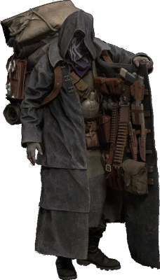

Resident Evil 4 Bio
O principal protagonista do jogo é Leon S. Kennedy, um dos poucos sobreviventes do incidente de Raccoon City, que foi recrutado e treinado pelo governo dos EUA para se tornar um agente especial depois de saberem de suas ações em Raccoon City. Agora agente de uma agência especial de segurança, Leon é enviado à Espanha com a missão de resgatar Ashley Graham, a filha do presidente, que foi sequestrada por uma misteriosa organização de culto. Após o desastre de Raccoon City e a subsequente indignação, a Umbrella Corporation foi sancionada pelo governo dos EUA e financeiramente prejudicada, praticamente deixando de existir como empresa.
O jogador controla o protagonista Leon S. Kennedy a partir de uma perspectiva em terceira pessoa. A jogabilidade centra-se na ação e tiroteios envolvendo multidões de inimigos em grandes áreas abertas. A câmera é colocada atrás de Leon, e amplia para uma visão sobre o ombro quando se aponta uma arma.Ao contrário dos jogos anteriores da série, há a adição de uma mira laser que adiciona uma nova profundidade ao apontar, permitindo que o jogador mire em várias direções e facilmente mude sua colocação em qualquer momento. Balas afetam os inimigos especificamente onde são atingidos: tiros nos pés podem fazer os inimigos tropeçar, enquanto tiros nos braços podem fazer eles largarem suas armas.
Enredo

Seis anos após os acontecimentos de Resident Evil 2, o ex-policial Leon Scott Kennedy é enviado em uma missão para resgatar Ashley Graham, filha do presidente dos Estados Unidos, que foi raptada por uma seita misteriosa.Ele viaja para uma aldeia rural na Espanha,onde encontra um grupo de moradores violentos que dedicam suas vidas para os Los Illuminados ("os iluminados" em espanhol), o culto que sequestrou Ashley. Os moradores eram simples fazendeiros até serem infectados por um parasita conhecido como Las Plagas ("A Praga" em espanhol). Na vila, Leon é capturado pelo chefe da aldeia, Bitores Mendez, que injeta nele o parasita Las Plagas.

Ele é mantido amarrado em um cativeiro juntamente com Luis Sera, um ex-pesquisador dos Illuminados.Os dois trabalham juntos para escapar, mas em seguida seguem aminhos separados. Leon descobre que Ashley está sendo mantida presa em uma capela, e consegue resgatá-la. Ambos fogem do local após Osmund Saddler, líder da seita, revelar seus planos para usar as Plagas injetadas em Ashley para causar um desastre nos Estados Unidos quando ela retornar.
Leon e Ashley tentam se refugiar dentro do castelo de Ramon Salazar, um servo de Saddler, mas são atacados por mais Illuminados. Os dois são separados um do outro por armadilhas de Salazar. Enquanto isso, Sera procura por pílulas para retardar a infecção de Leon e Ashley, e, em seguida, acha uma amostra de plaga. Ele traz os dois itens para Leon, mas é morto por Saddler, que toma a amostra, enquanto as pílulas para suprimir a infecção permanecem na posse de Leon. Ainda no castelo, ele se encontra brevemente com Ada Wong, uma mulher de seu passado que o apoiou em toda a sua missão. Por fim, ele confronta e mata Salazar. Leon então descobre que Ashley foi levada para um centro de pesquisa em uma ilha vizinha e vai encontrá-la.
Leon descobre depois que um de seus ex-companheiros de seus anos de formação, Jack Krauser, está vivo e é responsável pelo sequestro de Ashley. Ada e Krauser estão trabalhando juntos para alguém relacionado a Umbrella, que Krauser pretende para matar Saddler quando ele tiver chance. Este descobre os planos, e ele ordena a Krauser para matar Leon, sabendo que não importa qual deles morra, pois ele iria se beneficiar. Após derrotar Krauser, Leon resgata Ashley, e eles removem as plagas de seus corpos usando um dispositivo radioterápico especializado. Leon confronta Saddler depois de ver Ada como seu refém. Com a ajuda dela, Leon mata Saddler e Ada leva a amostra. Ela então foge do complexo em um helicóptero, deixando Leon e Ashley para escaparem em seu jet-ski enquanto a ilha explode.